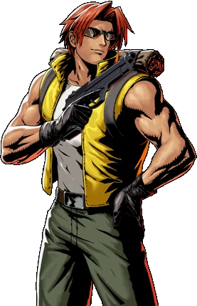

"So what's your next move...?" -Tarma's pet phrase.
The son of a distinguished military man, he entered the Special Forces Training School immediately after
junior high school. At the age of 20, he joined the PF Squad on a mission to rescue the president, where he
met Marco and became fast friends. Upon discovering that Marco had been selected for a counteroffensive in
the
Great War, he volunteered for action, where they fought through and survived the war together. Following the
war, both he and Marco were promoted, with Tarma becoming captain.